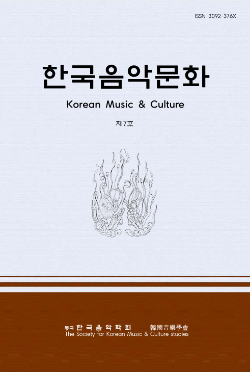

| 번호 | 분야 | 논문명 | 저자 | 원문(PDF) |
|---|---|---|---|---|
| 5 | 전통음악 |
국악관현악에서 B♭대금과 E♭대금의 음정 및 음색에 관한 연구
A Study on Pitch and Timbre of B♭ Daegeum and E♭ Daegeum in Korean Orchestra |
정지훈 | |
| 4 | 민속음악 |
동해안별신굿의 골메기굿 사설에 대한 연구
A Study on the Lyrics of Golmegi-gut in Donghae-an Byeolshin-gut |
홍효진 | |
| 3 | 불교음악 |
신라의 범패 통도소리의 의미와 가치
The Meaning and Value of Tongdo-sori, the Beompae of Silla |
윤소희 | |
| 2 | 불교음악 |
통도사 새벽예불의 전승 양상과 현대적 의의
Transmission Patterns and Contemporary Significance of the Dawn Ritual at Tongdosa |
양영진 | |
| 1 | 불교음악 |
통도사 영축 삼보이운의 전통성 연구
A Study on the Traditionality of Yeongchuk Samboi-un at Tongdosa |
최명철 (원명) |